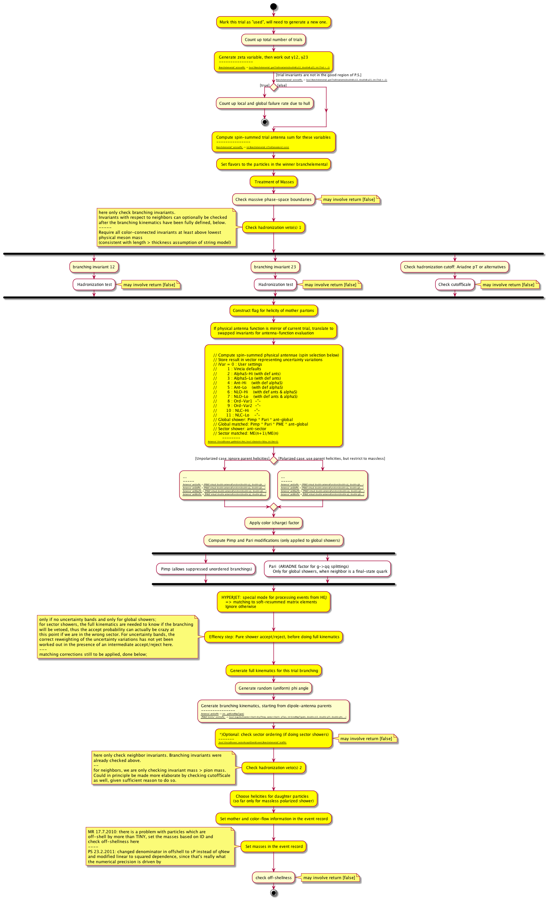

Flowgen generates high-level workflow diagrams from C++ annotated sources.
We present an annotation grammar for special comments inside a C/C++ source code, such as Doxygen's. Together, these comments have the potential to create flowcharts (activity diagrams [wikipedia]), showing the actual workings of the code. This provides information on the dynamics, rather than Doxygen's static documentation (classes/objects diagrams). It is specially useful for procedural programming: instead of truly Object Oriented, the code is rather Object Based. This is the scenario in many Physics applications, such as the VINCIA project for LHC Physics (vincia.hepforge.org).
The implementation of a tool that interprets those (contextual) comments would be based on clang AST and a diagram generator (such as graphviz, PlantUML or UMLet). Scientific collaborations are encouraged.
The specifications for this annotation grammar exist in the Extended Backus-Naur Form, .EBNF format. Download the file from this link . In order to visualize conveniently the .EBNF format, one can use the software EBNF Visualizer.
|
Source code (annotated) --> bool VinciaShower::acceptTrial(Event& event) { int iTrial = winnerPtr->getTrialIndex(); int iAntPhys = winnerPtr->getPhysIndex(iTrial); bool isSwapped = winnerPtr->getIsSwapped(iTrial); double qNew = winnerPtr->getTrialScale(iTrial); double mAnt = winnerPtr->m(); double sAnt = winnerPtr->s(); //$ Mark this trial as "used", will need to generate a new one. winnerPtr->renewTrial(iTrial); //$1 Count up total number of trials ++nTrialsSum; //************************************************* //$ Generate zeta variable, then work out y12, y23 //************************************************* double y12, y23; bool pass = winnerPtr->genTrialInvariants(y12, y23, iTrial); //$ //$1 [trial invariants are not in the good region of P.S.] if (! pass) { //$ See the complete file (.cc, text file) |
Flowchart (Activity Diagram)  |